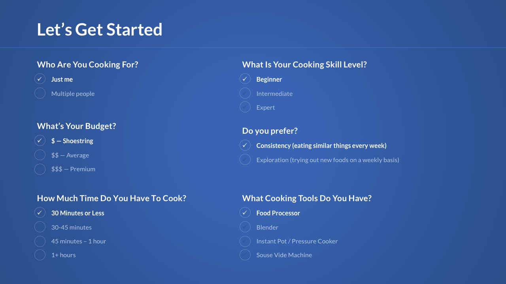
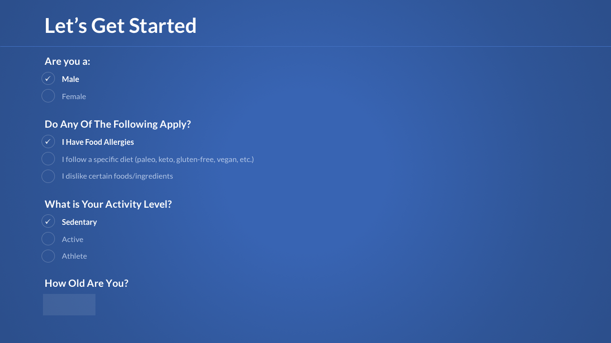
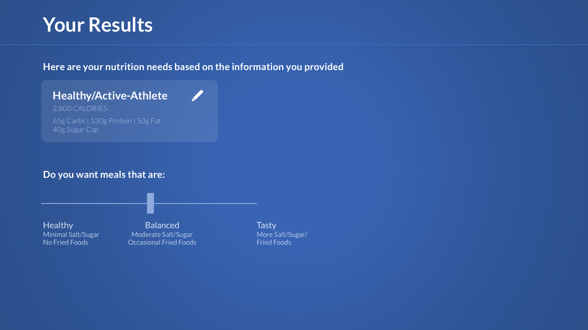
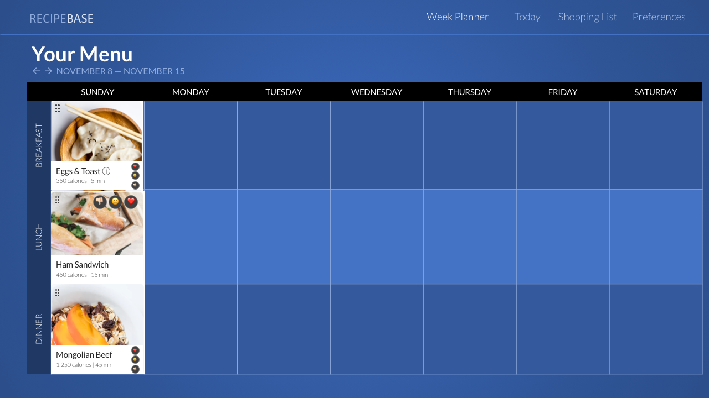
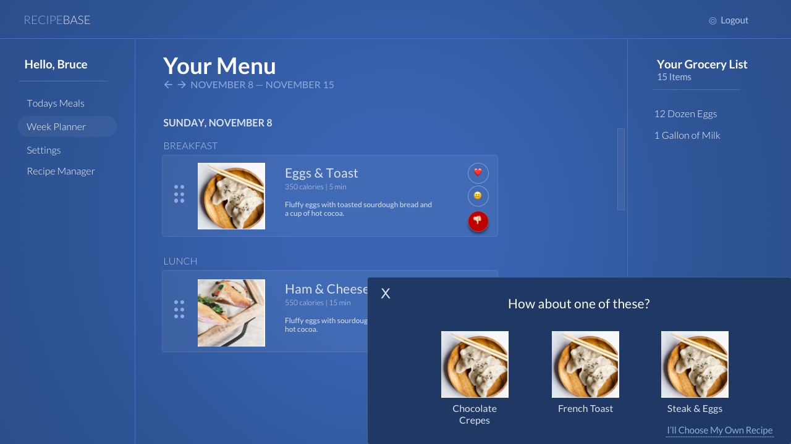

When it comes to food, everyone is different. We have different tastes, food restrictions tools, budgets, and schedules.
Yet, everyone often has similar frustrations with food — things like shopping on a budget, struggling to decide what to cook, and forgetting to buy ingredients at the grocery store.
RecipeBase solves these frustrations. Our app finds recipes that match your eating habits. Whether you’re an athlete that needs large amounts of calories and protein, or a white-collar worker that prioritizes taste, RecipeBase will find recipes you enjoy. During the setup process, you’ll help the app learn about you. Then, as you use the app, it gets to know your tastes even better with our built-in feedback system.
You’ll get weekly meal plans that meet your daily calorie requirements. Recipes will automatically adjust to the number of servings you need. If you have a family, the app will calculate the number of servings needed and automatically scale the recipe to match the number of servings required.
Sign Up For RecipeBaseEver buy ingredients for one recipe, only to never to use them again and throw them in the trash? With RecipeBase, you get a recipe plan that ensures you use all the ingredients you buy — before they expire.
Science shows that when you have too many choices, it’s harder to decide what to do. If you constantly struggle with deciding what to cook, our recommendation system can help you narrow down your options to something you’ll love.
Most recipes on the internet make either more or less servings than you want. Our app automatically scales the recipe to make the exact amount of servings you need.
We recommend recipes based on what’s in season and on sale at stores— meaning more money in your pocket.
In just four steps you’ll find yourself looking forward to cooking.
Are you an athlete? Gluten-free? Hate tomatoes? Cooking for more than one person? No matter what your situation, RecipeBase is built for you.
We’ll recommend recipes specifically for you on a weekly basis
Sometimes you’re not in the mood for one of our recommended recipes. Simply tap the “Meh” button and get another recipe that uses ingredients you already have on hand.
We generate shopping lists based on how often you shop. Our lists are categorized by department — so you’ll not only know what you need, but also exactly where to find it. You’ll never forget an ingredient again.
These first three screenshots cover the initial questionnare that helps the app cater to a person's specific tastes.
  This next screenshot is a concept of a weekly "calendar" view.
The next screenshot uses columns instead of traditional navigation.
When a person hits the "Dislike" or "Meh" button, they get three other recommendations, as well as the option to manually choose their own recipe
